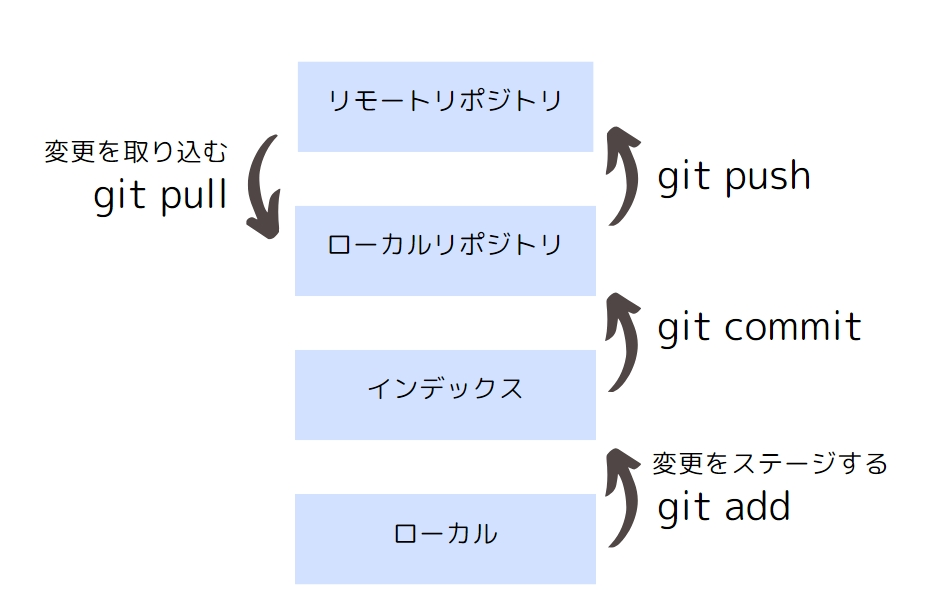

本記事の対象者
- はじめてのGitを使う人
- 個人開発でとりあえずGitを使いたい人
- いつも仕事で別のバージョン管理を使っている人
Gitとは
Gitとは、バージョン管理ツールのことです。
バージョン管理とは、ファイルの更新を記録しておき、2019年3月の時のファイルの内容などを復元できるようにすることです。また、バージョン管理ツールではコミットした人も記録するのが一般的です。
バージョン管理ツールは、GitかSubversionというツールが有名です。 最近では、Gitの方が人気で、Subversion（SVN）を使っていると古いなんで言われることもしばしば。。。
Gitの仕組み
これは、Gitに限らずバージョン管理ツールに共通して言える事ですが、ファイルの置き場所がいくつかあります。 場所と言っても「東京都の渋谷区の××」のように物理的な場所を指すわけではなく、クラウド上のどこかの場所です。 このいくつかのファイル置き場をうまく使い分けて、Gitは動きます。
クラウドにデータを置くとは、誰かの所有物で利用者はどこにあるか分からないサーバーにファイルを記憶させるということです。

まず、画像の一番下の「ローカル」とは皆さんのパソコンなどのことです。パソコンにファイルを保存しますよね？これのことです。
次に下から二番目の「インデックス」はもう一つ上の「ローカルリポジトリ」に必要なファイルだけを置くための言わば踏み台です。 皆さんのパソコンにある全てのファイルではなく、バージョン管理したいファイルのみをこの「インデックス」に置くのです。 この作業を「ステージング」といいます。
「ローカルリポジトリ」では個人で、「リモートリポジトリ」はみんなで使うクラウド上のファイル置き場です。 ここで、個人とはあなたのことで、みんなとは一緒に開発するメンバーのことです。
参考
2021 , git addとcommit、pushの関係をわかりやすく説明する【Gitコマンド解説①】株式会社ヌーラボ , 2021 , ワークツリーとインデックス
2010 , Git でファイルの変更をステージする（コミットの印をつける）
便利なコマンド
全ての変更をステージしたいとき
git add --allコメント付きでコミットするとき
git commit -m '任意のコミットメッセージ'参考
2014 , git addの--allオプションおわりに
最後まで読んでいただき、ありがとうございました。皆さん、コミット出来ましたか？
筆者は前職も今の会社もSubversionを使っているのですが、ハッカソンや個人開発ではGitを使っています。
Gitを使いこなして、楽しい開発ライフを送りましょー！